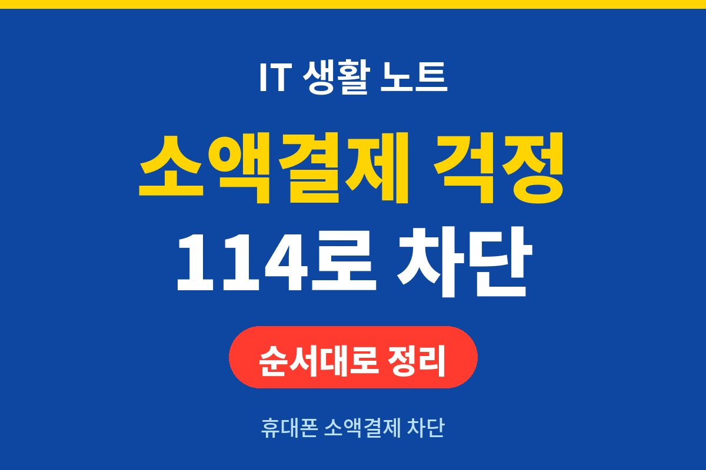
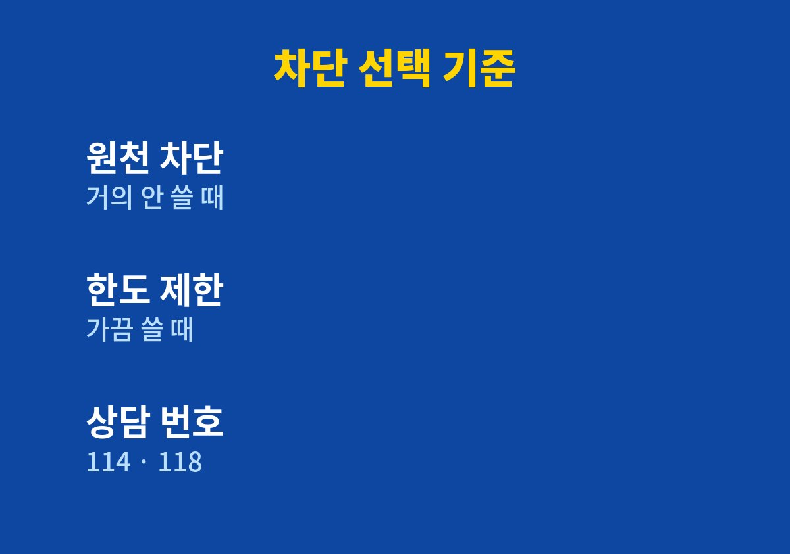
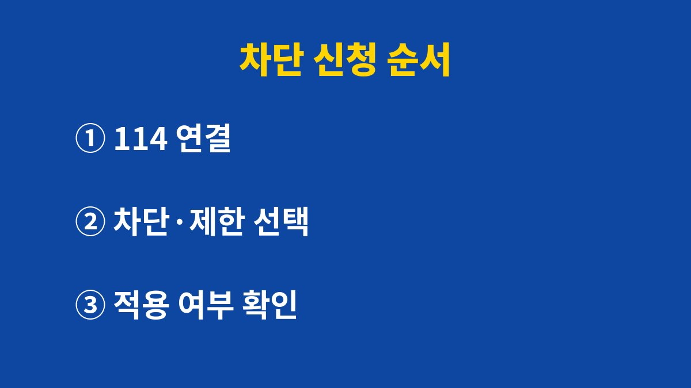

휴대폰 소액결제 차단은 통신사 고객센터나 홈페이지에서 원천 차단 또는 결제금액 제한으로 걸 수 있고, 내 스마트폰에서 114로 전화해 상담원과 연결되면 바로 신청할 수 있다.
스미싱으로 악성 앱이 깔리면 소액결제 인증번호가 새어 나갈 수 있어서, 문자 링크를 누르기 전에 결제 통로부터 닫아 두면 피해 범위가 줄어든다.
2026년 11월 기준 KISA 보호나라 안내를 바탕으로 신청 순서와 피해가 났을 때 할 일을 적었다.
스미싱은 문자메시지와 피싱을 합친 말이다.
무료쿠폰, 돌잔치 초대장, 모바일 청첩장 같은 문구로 링크를 누르게 만든다.
링크를 누르면 악성코드가 설치되고, 본인도 모르는 사이에 소액결제 피해나 개인·금융정보 유출이 생긴다.
악성코드는 결제 인증번호뿐 아니라 주소록과 사진, 인증서까지 가져갈 수 있다고 안내된다.
지인 이름으로 온 문자에는 손이 먼저 간다.
KISA는 지인이 보낸 문자라도 주소가 들어 있으면 누르기 전에 전화로 확인하라고 안내한다.
그래도 사람은 한 번쯤 실수하기 마련이라, 결제 자체를 막는 장치를 따로 두는 쪽이 안전하다.
청첩장이라는 문자를 받고 링크를 눌렀는데 아무 화면도 뜨지 않는 경우가 있다.
화면이 뜨지 않았더라도 그 사이에 설치가 진행됐을 수 있어서, 아무 일 없어 보여도 다운로드 목록부터 열어 본다.
KISA 안내에는 소액결제를 원천 차단하거나 결제금액을 제한하라는 두 방법이 나온다.
소액결제를 거의 쓰지 않는다면 원천 차단이 단순하다.
콘텐츠나 게임 결제에 가끔 쓴다면 한도 제한으로 피해 상한선만 낮추는 방법이 맞는다.
한도 금액은 통신사마다 안내가 달라서 신청할 때 상담원이나 화면에서 직접 확인해야 한다.
| 상황 | 선택 | 이유 |
|---|---|---|
| 소액결제를 쓴 적이 거의 없다 | 원천 차단 | 결제 통로 자체가 닫힌다 |
| 가끔 콘텐츠·게임을 결제한다 | 결제금액 제한 | 쓰던 결제는 두고 피해 규모만 낮춘다 |
| 부모님 폰이나 오래 쓴 폰 | 원천 차단 | 문자 링크를 가려내기 어려운 경우가 많다 |

신청 전에 알아 둘 점이 있다.
소액결제 차단은 결제 통로만 막고, 이미 깔린 앱을 지워 주지는 않는다.
차단 중에는 평소 쓰던 콘텐츠 결제도 막히므로 필요한 날에는 상담원에게 해제를 요청해야 한다.

결제를 막았어도 악성 앱이 깔려 있으면 주소록과 사진 같은 정보는 그대로 빠져나갈 수 있다.
링크를 누른 기억이 있다면 설정의 애플리케이션 관리자에서 다운로드 항목을 열어 apk 파일이 있는지 본다.
지워지지 않으면 휴대전화 서비스센터를 찾거나 스마트폰을 초기화하라는 것이 KISA 안내다.
금액이 빠져나갔다면 경찰서에서 사건사고 사실확인원을 발급받는다.
이 서류를 이동통신사, 게임사, 결제대행사 같은 관련 사업자에게 낸다.
부당 청구 요금은 통합민원센터 1335에 도움을 요청할 수 있다.
해킹·스팸·개인정보침해 상담은 118이 맡는다.
차단을 걸었다면 다음 달 청구서에서 소액결제 항목이 비어 있는지 한 번 확인하면 된다.
모르는 항목이 보이면 바로 통신사에 묻고 118에도 상담한다.
참고로 KISA 안내문은 2023년에 올라온 글이라 통신사 화면 구성은 그 뒤 바뀌었을 수 있다.
114 연결 방식과 한도 금액은 이용 중인 통신사 공지로 한 번 더 본다.
참고 자료: 한국인터넷진흥원 KISA 보호나라 「스미싱(Smishing)이란?」 안내(2026년 11월 확인)
※ 2026년 기준 공식 안내를 바탕으로 정리한 글이며, 기기·앱 버전에 따라 메뉴 이름이 다를 수 있다.